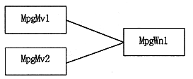

The following restrictions apply to the MPEG window display switch. (a) Two or more VDP2 output window display switches must not be turned ON simultaneously. Please connect and use as shown below.

/ * Host transfer output of 352 x 240 pixel image at the same magnification * / / * Change display size * / MPG_WnSetSize(mpgwn, (352/2), 240);/ * Set magnification * / MPG_WnSetDispRatio(mpgwn, 2000, 1000);
/ * Host transfer output execution * /